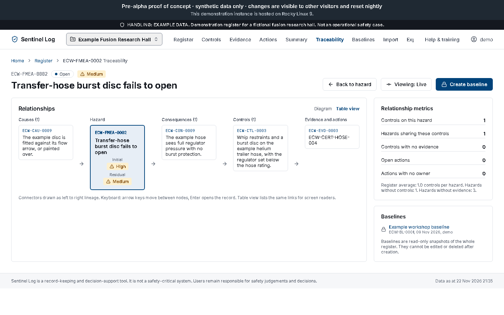

Trace a hazard
- Viewer opens the sample hazard traceability page; the chain shows its causes, consequences, controls, evidence, and actions with the risk assessments. See Figure 1.

Figure 1. Traceability page; chain shows its causes - Viewer reads the relationship metrics panel: controls on the hazard, hazards sharing controls, controls with no evidence, and open actions.
- Viewer follows the back-to-hazard link and the breadcrumb trail back to the register, keeping traceability context.